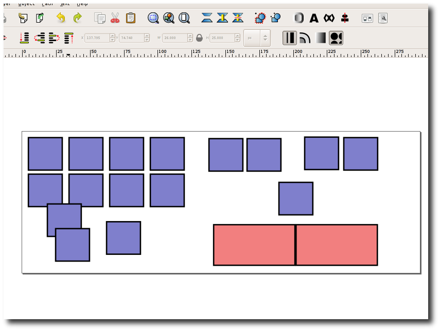
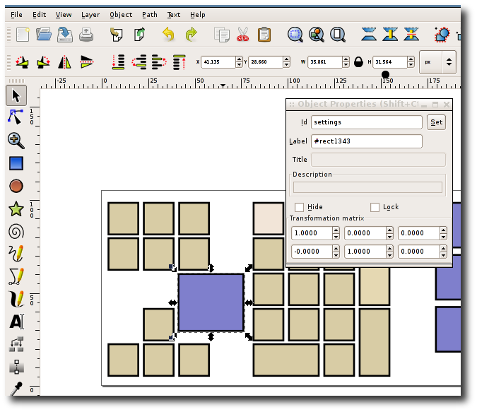

Open the settings dialog. Select the layout you want to personalise and click
"Personalise this layout". Type the name of your new layout.
A file browser window will now open showing your layout folder.
Open the .svg file you want to change with a vector graphics package.
I recommend Inkscape which is free. You can move the keys, change their width, height
and colour.

To move a key from one pane to another, right click on the key and click object
properties. Note the id of the key. Either create a new rectangle on the other pane
or use an existing one. Bring up the object properties and change the id to that of the
key you want it to be.

Layouts are composed of one .onboard file and one or more .svg files. The .onboard file contains all the settings for each pane and properties such as label and action but not the location of each key.
Each svg file contains the placement of each key on the plane. I recommend you use
a vector graphics package such as inkscape to create or modify these files.
Keys can be rectangles or paths (straight lines or bezier curves) though Onboard
only detects clicks quite approximately around curves. The id of each object in the
svg file corresponds to a key in the .onboard file with the same id. Set the id in
Inkscape by right clicking on the object and selecting object properties.
The .onboard file contains pane and key objects. It is in XML format. Each pane object has:
Each key object has:
It can also have:
List of names that can be paired with the modifier attribute of key:
List of names that can be paired with the press attribute of key: